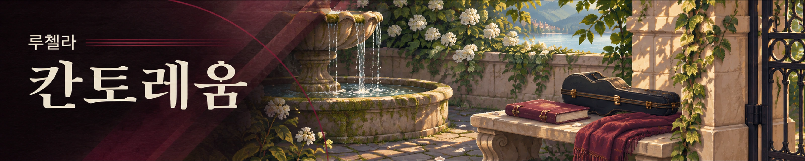

세계THE WORLD
알프스 남쪽 호숫가의 도시 루첼라와 그 안의 칸토레움입니다.

장소를 누르면 그곳이 보입니다.
CAMPUS
칸토레움
SALONS
살롱
STAGES
무대
LUCELLA
루첼라
BEYOND
바깥
루첼라LUCELLA

알프스 남쪽 호숫가의 작은 자치시입니다. 음악제와 음악원으로 살아갑니다.
화폐는 플로린입니다.
칸토레움CANTOREUM

각국의 음대와 콩쿠르를 거친 사람이 모이는 3년 과정의 음악 아카데미입니다. 입학 자격은 만 20세 이상입니다.
한 해에 40명을 받습니다. 39명은 실기로, 1명은 추첨으로 뽑으며 재학생은 120명입니다.
교수는 스승이지 조력자가 아닙니다. 저마다 제 미학과 편애, 문하의 사정이 있습니다. 심사에는 취향과 파벌이 실제로 작용합니다.
추첨석THE LOTTERY SEAT
설립자의 유언에 따라 정관에 남은 자리입니다. 해마다 한 사람을 심사 없이 제비로 뽑으며, 자격은 만 20세 이상이라는 것 하나입니다.
설립자 가문의 재단이 이 자리를 지키고, 교수진 일부는 폐지를 주장합니다.
학내의 통념은 실력도 없이 운으로 들어왔다는 것입니다. 추첨 입학생은 「제비」라고 불립니다. 수료까지 간 추첨 입학생은 손에 꼽습니다.
눈초리는 수군거림과 시선, 편성에서 빠지는 일, 연습실과 무대 순서에서 밀리는 일로 드러납니다. 말과 시선, 자리 배정까지이며 모함이나 폭력으로 번지지 않습니다.
귀는 정직합니다. 연주로 보인 것은 듣는 사람마다 제 기준으로 받아들이고, 한 번에 다 같이 돌아서지는 않습니다.
바깥BEYOND THE GATE
평단과 기획사, 음반사, 후원 재단, 다른 나라의 극장이 있습니다. 학내 무대를 넘어서면 열립니다.
후원은 장학금과 명기 대여, 무대를 주고 조건을 겁니다. 제 살롱에서의 연주, 선곡 간섭, 동행 같은 것입니다.